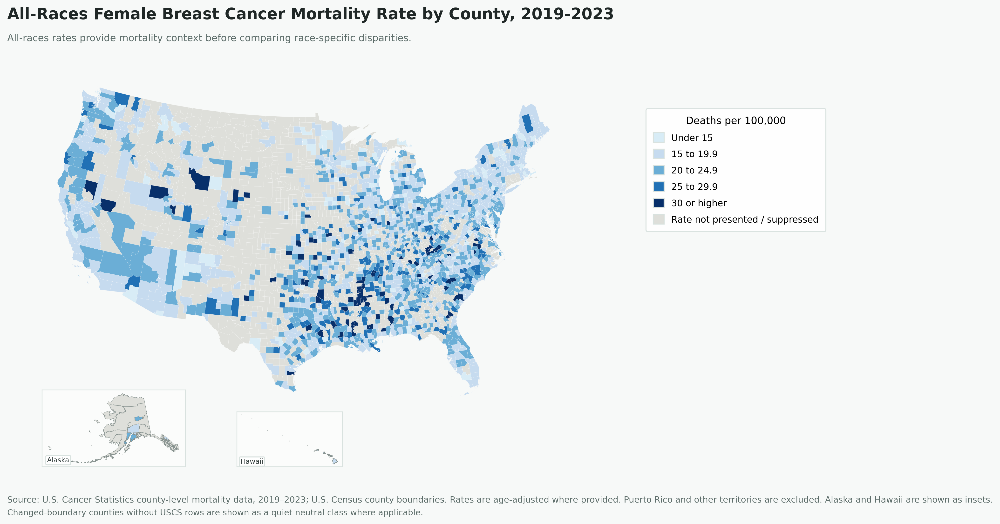

Context / Why It Matters
Mapping county-level differences can help communicate where direct Black-to-White breast cancer mortality comparisons are possible and where suppression limits interpretation.
Main Visuals
All-Races Female Breast Cancer Mortality, 2019-2023

Data Coverage and Suppression, 2019-2023

Black-to-White Mortality Ratio, 2019-2023

Analysis
The analysis compares Black and White breast cancer mortality rates where both values are available for the same county. A mortality ratio greater than 1 means Black mortality is higher than White mortality in that county.
Dual-data counties are necessary because a ratio cannot be calculated where one group has suppressed or missing mortality data. The ratio map should be read as a comparable-county analysis rather than a complete national county map.
Methods
Filter to counties with both Black and White mortality values, calculate the mortality rate ratio, map the disparity measure, and prepare the dataset for future spatial clustering analysis.
Tools Used
ArcGIS Pro, public health rate data, county joins, ratio calculation, suppression review, static cartographic exports.
Limitations
Suppression affects direct comparison, especially in counties with low counts. County-level patterns do not identify individual risk and should be interpreted with socioeconomic, health care access, screening, and treatment context.
Data Sources
U.S. Cancer Statistics county-level mortality data; U.S. Census population data; county boundary layers; project-derived Black-to-White mortality ratio calculations.
Conclusion / Next Step
The next step is to document the data suppression logic, ratio formula, and a defensible spatial clustering workflow so the map interpretation remains reproducible.
Back to GIS Portfolio